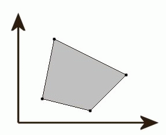

BZPRO
#2897. 电子稻草人
内存限制：256 MiB
时间限制：10 Sec
提交
提交记录
讨论
题目描述
今后，农民就不必依靠原始的稻草人来驱赶偷吃农作物的鸟类了。一种全新的发明电子稻草人将使鸟类远离田地。
如果你有三个电子稻草人，摆放在田里的三个位置，那么鸟儿就不能飞进这三个稻草人组成的三角形内，因为这里面有他们发出的激光。同理，如果有多个稻草人摆放在田里，那么他们所围成的区域（通常称之为凸包）将被保护。例如下图：

图中的黑点代表电子稻草人，阴影部分为收到保护的区域。
这个发明听起来不错，但是他又两个缺点：一是电子稻草人十分昂贵，所以农夫不能卖的起很多电子稻草人；二是他们十分沉重，必须放在坚实的地基上，这就限制的摆放稻草人的位置。
现在给出可以放稻草人的n个点的坐标，以及农夫可以购买最多稻草人数m，求最大可以保护田地的面积。
输入格式
输入数据包括三行。
第一行有n个数，为n个可以放置稻草人点的x坐标；
第二行有n个数，为n个可以放置稻草人点的y坐标；
第三行一个整数，m。
输出格式
一个实数sum，为所求的面积（答案误差小于1e-9）。
样例
样例输入
2 1 6 5 3 7 9
2 5 1 5 7 6 4
4
样例输出
24.0
Data Limit
所有的坐标在0到1000之间，保证解大于0。
数据范围与提示